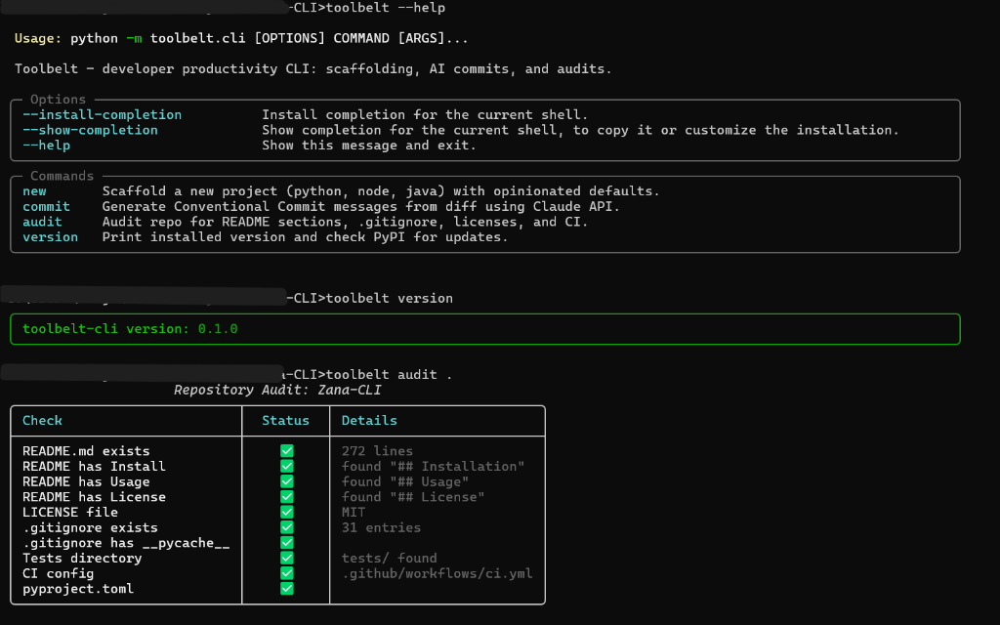

Build Faster with Toolbelt CLI
An opinionated developer productivity CLI built with Python 3.11+, Typer, Rich, and Claude API. Scaffold robust projects across Python, Node, and Java, draft Conventional Commits from staged diffs, and audit repositories with auto-repair.



Core Highlights
Multi-Language Scaffolding
Generate opinionated, production-ready project templates for Python, Node.js / TypeScript, and Java with pre-configured linters, unit tests, GitHub Actions CI, and Dockerfiles.
AI Commits with Claude
Analyzes your staged git diff and drafts structured Conventional Commit messages using Claude Sonnet 4. Includes a deterministic rule-based fallback when offline.
10-Point Repo Auditor
Audits repositories for README sections, test suites, licenses, CI configs, and .gitignore rules. Features --fix to auto-create missing standard files.
PyPI Sync & Dual Alias
Inspects your installed version and queries the PyPI API for newer releases. Ships with dual entrypoints: toolbelt and the Swahili alias zana.
Installation
Toolbelt CLI is distributed on PyPI and can be installed through any modern Python package manager.
# Isolated install in its own virtual environment
pipx install toolbelt-cli# Blazing-fast installation via astral uv
uv tool install toolbelt-cli# Standard pip install
pip install toolbelt-cligit clone https://github.com/crnjihia/toolbelt-cli.git
cd toolbelt-cli
pip install -e ".[dev]"toolbelt and zana (Swahili for "tools"). Both commands are 100% equivalent.
Quickstart
Run toolbelt --help to see global flags and available commands:
$ toolbelt --help
Usage: toolbelt [OPTIONS] COMMAND [ARGS]...
Toolbelt – developer productivity CLI: scaffolding, AI commits, and audits.
Options:
--install-completion Install completion for the current shell.
--show-completion Show completion for the current shell.
--help Show this message and exit.
Commands:
audit Audit repo for README sections, .gitignore, licenses, and CI.
commit Generate Conventional Commit messages from diff using Claude API.
new Scaffold a new project (python, node, java) with opinionated defaults.
version Print installed version and check PyPI for updates.Interactive Terminal Simulator
Test real CLI commands directly in your browser. Click any quick shortcut or type any command below:
toolbelt new <type> <name>
Scaffolds a new project directory with opinionated defaults, complete with interactive Rich prompts or non-interactive automation flags.
# Interactive scaffolding
toolbelt new python my_api_service
# Non-interactive scaffolding with all defaults accepted
toolbelt new python my_api_service --yes
# With custom flags
toolbelt new node web_client --author "Jane Doe" --license Apache-2.0 --ci --no-dockerArguments & Options
| Argument / Option | Type | Default | Description |
|---|---|---|---|
type |
Argument | (required) | Project ecosystem: python, node, or java. |
name |
Argument | (required) | Target directory and package/module name. |
-a, --author |
Option | Git user.name |
Author name injected into License, Readme, and manifests. |
-l, --license |
Option | MIT |
License choice: MIT, Apache-2.0, or none. |
--ci / --no-ci |
Option | True |
Include .github/workflows/ci.yml pipeline. |
--docker / --no-docker |
Option | False |
Include multi-stage Dockerfile. |
-y, --yes |
Flag | False |
Accept all default prompts automatically without pausing. |
toolbelt commit
Inspects your currently staged Git diff (git diff --staged) and drafts a Conventional Commit message conforming to <type>(<scope>): <subject>.
# Stage your modifications first
git add src/
# Run commit generator
toolbelt commit│ feat(auth): add bearer token validator and refresh middleware │
└─────────────────────────────────────────────────────────────────────────────┘
Apply commit? [y/n/edit] (y): y
✅ Commit created successfully!
Dual Intelligence Modes
🤖 Claude Sonnet 4 (Online)
When ANTHROPIC_API_KEY is exported, Toolbelt sends your staged diff to Claude Sonnet 4 with system rules enforcing strict Conventional Commit types: feat, fix, docs, style, refactor, test, chore.
⚡ Heuristic Analyzer (Offline Fallback)
If no API key is detected or the network is unavailable, Toolbelt analyzes changed filenames, lines added/removed, and directory patterns to produce clean commits like test: update 2 files (+18/-3 lines).
Options
| Option | Type | Default | Description |
|---|---|---|---|
--dry-run |
Flag | False |
Print proposed commit message without creating a commit. |
-t, --type |
Option | Auto | Force commit type (e.g., feat, fix, chore). |
-s, --scope |
Option | Auto | Force commit scope (e.g., api, ui, parser). |
-y, --yes |
Flag | False |
Commit immediately without interactive confirmation. |
toolbelt audit [path]
Scans any local repository for essential documentation, licenses, configuration files, and quality infrastructure across 10 critical checks.
# Audit current directory
toolbelt audit .
# Audit with interactive auto-fix for missing .gitignore and LICENSE
toolbelt audit . --fix
# Output machine-readable JSON for CI pipelines
toolbelt audit . --jsonThe 10 Audit Verification Checks
| Check Name | What is Verified | Failure Criteria |
|---|---|---|
README.md exists |
Verifies file presence & line count | File is missing |
README has Install |
Regex checks for ## Installation section |
Missing installation instructions |
README has Usage |
Regex checks for ## Usage section |
Missing usage guides |
README has License |
Regex checks for ## License section |
Missing license attribution |
LICENSE file |
Inspects root LICENSE file content |
File is missing |
.gitignore exists |
Verifies file and counts rule entries | File is missing |
.gitignore has __pycache__ |
Ensures Python cache ignores exist | Missing __pycache__ ignore rule |
Tests directory |
Checks tests/, test/, or src/test/ |
No non-empty test directory found |
CI config |
Checks .github/workflows/*.yml |
No CI workflow files exist |
pyproject.toml |
Checks Python build metadata file | File is missing |
toolbelt audit returns an exit code of 0 when all 10 checks pass, and 1 if any check fails, making it ideal as a GitHub Actions gatekeeper or pre-commit hook.
toolbelt version
Reads the locally installed package version using importlib.metadata and asynchronously queries the PyPI JSON API via HTTPX to notify you if an update has been released.
$ toolbelt version
╭───────────────────────────────╮
│ toolbelt-cli version: 0.2.0 │
╰───────────────────────────────╯
A newer version 0.2.4 is available!
Run: pip install -U toolbelt-cliConfiguration & Environment
Toolbelt CLI requires no configuration to run offline. To enable AI-powered commit generation, export your Anthropic API key:
# Optional Anthropic API Key for Claude-powered commits
export ANTHROPIC_API_KEY="sk-ant-api03-..."
# Optional custom log level for internal debugging
export LOG_LEVEL="INFO"Architecture & Tech Stack
Toolbelt CLI is architected around separation of concerns, decoupling Typer command definitions from service logic and templates:
Typer & Rich
Type-hinted CLI parser with automatic help generation, formatted tables, rounded panels, and prompt dialogs.
Jinja2 Engine
FileSystemLoader template rendering with recursive file walker and path-placeholder resolution.
Anthropic + Fallback
Claude Sonnet 4 client wrapped in graceful fallback heuristics when running in offline or CI environments.
Testing & Quality Assurance
The codebase maintains a 100% offline unit test suite powered by pytest and Typer's CliRunner.
# Run all 19 offline unit tests
$env:PYTHONPATH="src"; pytest -v
# Code hygiene with Ruff linter
ruff check .
# Code formatting with Ruff formatter
ruff format --check .
# Static type checking with MyPy
mypy srcPyPI Trusted Publishing (OIDC)
This repository uses GitHub Actions Trusted Publishing with OpenID Connect (OIDC). No long-lived passwords or API tokens are stored in repository secrets.
# 1. Update version in pyproject.toml & CHANGELOG.md
# 2. Tag release and push to GitHub
git tag v0.3.0
git push origin v0.3.0
# GitHub Actions release.yml builds the wheel and sdist,
# executes twine check, and publishes to PyPI automatically!Contributing & License
Contributions, bug reports, and pull requests are warmly welcomed! Please check existing issues on GitHub Issues before opening a new one.
Released under the MIT License. Copyright © 2026 Christopher Njihia.